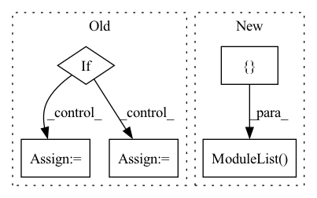

Pattern ID :1512
Before Change
if bilinear_upsample:
upsample_klass = partial(InterpolateUpsample, mode = "bilinear")
elif :
upsample_klass = partial(InterpolateUpsample, mode = "nearest")
else:
upsample_klass = Upsample
// upsampling layers
After Change
skip_connect_dims.append(current_dim)
self.downs.append(nn.ModuleList([
pre_downsample,
ResnetBlock(current_dim, current_dim, cond_dim = layer_cond_dim, linear_attn = layer_use_linear_cross_attn, time_cond_dim = time_cond_dim, groups = groups),
nn.ModuleList([ResnetBlock(current_dim, current_dim, time_cond_dim = time_cond_dim, groups = groups, use_gca = use_global_context_attn) for _ in range(layer_num_resnet_blocks)]),
transformer_block_klass(dim = current_dim, heads = attn_heads, dim_head = attn_dim_head, ff_mult = ff_mult),
downsample_klass(current_dim, dim_out) if not memory_efficient and not is_last else None) )
// middle layers
In pattern: SUPERPATTERN
Frequency: 4
Non-data size: 5
Instances Fragment ID: 4197327
Project Name: lucidrains/imagen-pytorch
Commit Name: 36bdefca0e8670ca42b39236315121b703b9533f
Time: 2022-06-27
Author: lucidrains@gmail.com
File Name: imagen_pytorch/imagen_pytorch.py
M Class Name: Unet
N Class Name: Unet
M Method Name: __init__(1)
N Method Name: __init__(1)
M Parent Class: nn.Module
N Parent Class: nn.Module
M File Name: imagen_pytorch/imagen_pytorch.py
N File Name: imagen_pytorch/imagen_pytorch.py
M Start Line: 1178
M End Line: 1250
N Start Line: 1148
N End Line: 1221
Before Change
raise TypeError("Unknown Type:\t{}".format(norm))
self.norm0 = norm(out_channels)
if self.concat:
if self.mode == "res_mask":
k= 2*out_channels + 1
else:
k = 2*out_channels
self.conv1 = conv3x3(k, out_channels)
self.norm1 = norm(out_channels)
else:
self.conv1 = conv3x3(out_channels, out_channels)
self.norm1 = norm(out_channels)After Change
// residual structure
self.conv2 = []
self.conv3 = []
for i in range(blocks):
self.conv2.append(
nn.Sequential(*[
nn.Conv2d(out_channels // 2 + 1, out_channels // 4, 5, 1, 2),
nn.ReLU(True),
nn.Conv2d(out_channels // 4, 1, 5, 1, 2),
nn.Sigmoid()
])
)
self.conv3.append(conv3x3(out_channels // 2, out_channels))
self.bn = []
for _ in range(blocks):
self.bn.append(norm(out_channels))
self.bn = nn.ModuleList(self.bn)
self.conv2 = nn.ModuleList(self.conv2)
self.conv3 = nn.ModuleList( self.conv3)
self.act = act
def forward(self, from_up, from_down, mask=None):
from_up = self.act(self.norm0(self.up_conv(from_up))) Fragment ID: 4197330
Project Name: bcmi/slbr-visible-watermark-removal
Commit Name: 43e84b70895d28955496122816e50857863e5bfd
Time: 2022-01-04
Author: lj200820082007@163.com
File Name: src/networks/blocks.py
M Class Name: MBEBlock
N Class Name: MBEBlock
M Method Name: __init__(10)
N Method Name: __init__(10)
M Parent Class: nn.Module
N Parent Class: nn.Module
M File Name: src/networks/blocks.py
N File Name: src/networks/blocks.py
M Start Line: 208
M End Line: 235
N Start Line: 208
N End Line: 248
Before Change
self.out_channels =out_channels
self.dim = dim
if self.dim ==2:
make_conv = ConvNormActive2D
elif dim ==3:
make_conv = ConvNormActive3D
else:
raise ValueError("dim should be 2 or 3")
After Change
self.conv_list.append(ConvNormActive(in_channels, out_channels, kernel_size=3, norm=norm, active=active, gn_c = gn_c, dim = dim))
self.conv_list.append(ConvNormActive(out_channels, out_channels, kernel_size=3, norm=norm, active="None", gn_c = gn_c, dim = dim))
elif self.type == "131":
self.conv_list = nn.ModuleList([] )
self.conv_list.append(ConvNormActive(in_channels, middle_channels, kernel_size=1, norm=norm, active=active, gn_c = gn_c, dim = dim, padding=0))
self.conv_list.append(ConvNormActive(middle_channels, middle_channels, kernel_size=3, norm=norm, active=active, gn_c = gn_c, dim = dim))
self.conv_list.append(ConvNormActive(middle_channels, out_channels, kernel_size=1, norm=norm, active="None", gn_c = gn_c, dim = dim, padding=0))
else: Fragment ID: 4197335
Project Name: wamawama/wama_modules
Commit Name: b2bf89e72b262002500e8271f984d6f8afac7eb3
Time: 2022-10-25
Author: wmy19970215@gmail.com
File Name: wama_modules/BaseModule.py
M Class Name: ResBlock
N Class Name: ResBlock
M Method Name: __init__(9)
N Method Name: __init__(6)
M Parent Class: nn.Module
N Parent Class: nn.Module
M File Name: wama_modules/BaseModule.py
N File Name: wama_modules/BaseModule.py
M Start Line: 362
M End Line: 384
N Start Line: 357
N End Line: 389
Before Change
get_attn = lambda: SinkhornSelfAttention(dim, causal = causal, heads = heads, buckets = buckets, kv_buckets = kv_buckets, non_permutative = non_permutative, sinkhorn_iter = sinkhorn_iter, n_sortcut = n_sortcut, temperature = temperature, attn_dropout = attn_dropout, dropout = attn_layer_dropout, attn_sort_net = attn_sort_net)
get_ff = lambda: FeedForward(dim, dropout = ff_dropout, glu = ff_glu)
if weight_tie:
get_attn = cache_fn(get_attn)
get_ff = cache_fn(get_ff)
for _ in range(depth):
layers.append(nn.ModuleList([After Change
]))
if receives_context:
layers.append(nn.ModuleList([
PreNorm(nn.LayerNorm, dim, get_attn_context()),
PreNorm(nn.LayerNorm, dim, Chunk(ff_chunks, get_ff_context(), along_dim=1))) )
execute_type = Reversible if reversible else Sequential
Fragment ID: 4197336
Project Name: lucidrains/sinkhorn-transformer
Commit Name: c2662a20cb783efd3351936cfabc83131060a2a6
Time: 2020-04-10
Author: lucidrains@gmail.com
File Name: sinkhorn_transformer/sinkhorn_transformer.py
M Class Name: SinkhornTransformer
N Class Name: SinkhornTransformer
M Method Name: __init__(20)
N Method Name: __init__(19)
M Parent Class: nn.Module
N Parent Class: nn.Module
M File Name: sinkhorn_transformer/sinkhorn_transformer.py
N File Name: sinkhorn_transformer/sinkhorn_transformer.py
M Start Line: 547
M End Line: 554
N Start Line: 546
N End Line: 576